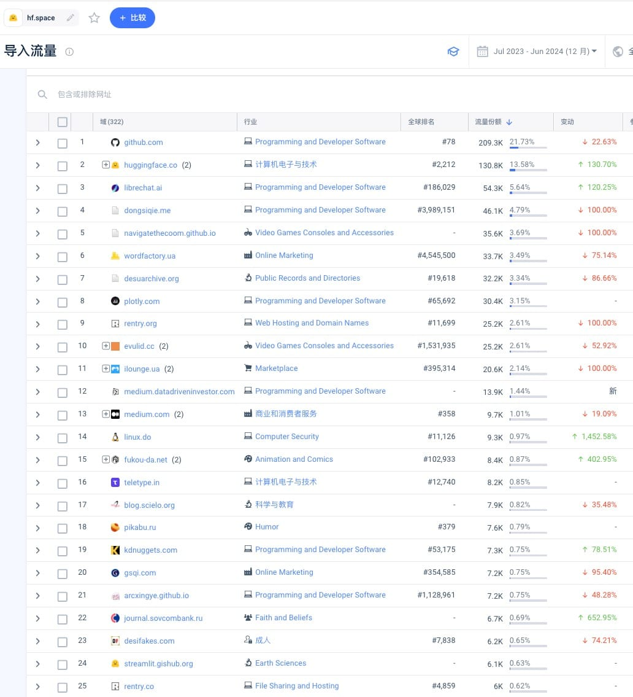

分享一个快速找套壳网站的方法
日期：2024-07-22
之前分享过通过看 checkout.stripe.com 的入站流量来分析不同网站的收入情况，今天哥飞小课堂，快速分享一个找套壳网站的方法。
拿 hf.space来举例，在 Similarweb 可以看到所有给 hf.space导入流量的网站。
这些网站有一部分是直接给 hf.space增加外链，还有一部分是用 iframe 嵌入了 hf space 。我们要做的就是从导入流量的网站列表里找出用 iframe 嵌入的网站。

不仅可以直接查 hf.space 的，还可以查具体某一个 space 的，如 openai-openai-detector.hf.space。
举一反三，除了 hf.space，还可以查什么呢？其实在我们的网站里引用别的网站的图片、视频等静态资源，也算是外链。
所以，一些热门的 AI 产品的 CDN 域名，你也可以拿来查一查。这个点到为止，大家自己去实践。